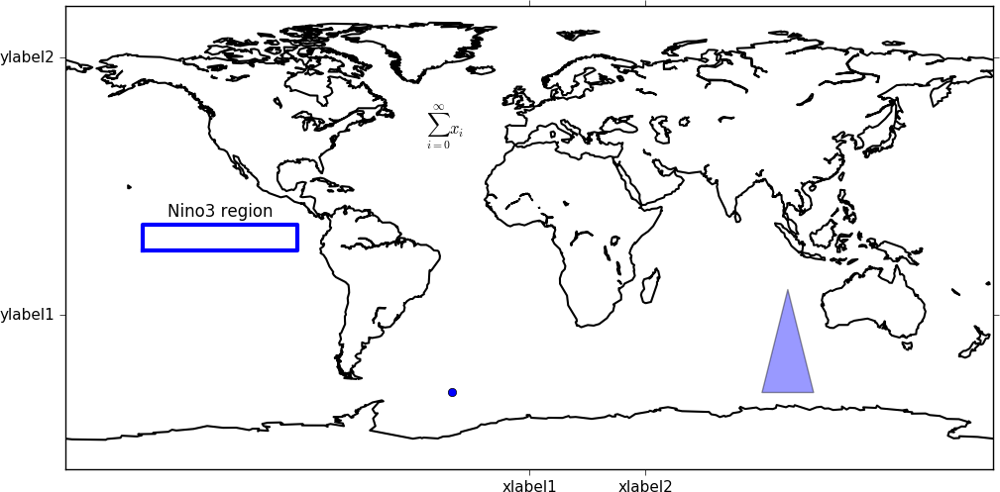

Advanced Use¶
Here are some hints and tips on advanced use of cf-plot.
Adding user defined lines and text to plots¶
In cf-plot the plot is stored in a plot object with the name cfp.plotvars.plot. The page containing the plots is named cfp.plotvars.plot_master.
To see all the methods for the plot object type
cfp.gopen()
dir(cfp.plotvars.plot)
In this example we make a blank map plot, change the longitude labels and add a box and some text. To add text and lines outside of the plot use the same method as below with coordinates outside of the defined plot area.
cfp.gopen()
cfp.levs(-1000, -900, 100)
cfp.con(f.subspace(time=15),lines=0, fill=0)
cfp.plotvars.plot.set_xticks([0.0, 45.0])
cfp.plotvars.plot.set_xticklabels(['label1', 'label2'])
cfp.plotvars.plot.set_xlabel('X axis plot label')
xpts=[-150, -150, -90, -90, -150]
ypts=[-5, 5, 5, -5, -5]
cfp.plotvars.plot.plot(xpts,ypts, linewidth=3.0, color='blue')
cfp.plotvars.plot.text(-120, 8, 'Nino3 region', horizontalalignment='center')
cfp.gclose()